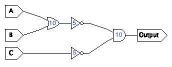
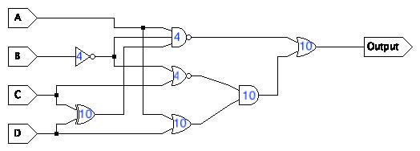
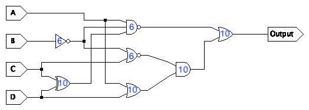
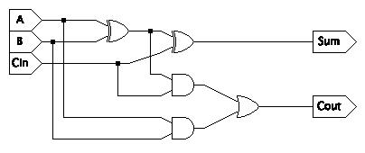
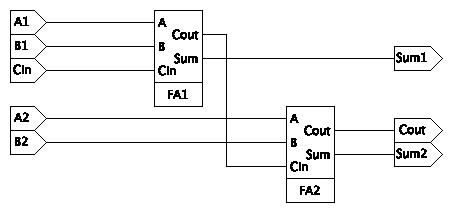
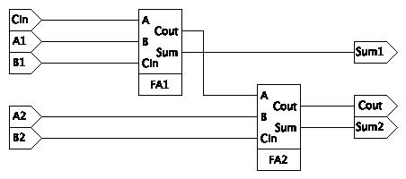

- Find the propagation delay for this circuit:

- Find the propagation delay for this circuit:

- Find the propagation delay for this circuit:

- Find the propagation delay for each input/output combination in this circuit assuming all gates have a propagation delay of 10. (You will have six answers): 
- Find the propagation delay for this circuit (just one answer this time):

- If you connect the full adders as shown here, will the circuit still produce the correct answer? If so, why. If not, give an example of inputs that produce an incorrect output.

- What is the propagation delay of the circuit from the previous problem?
- Why does changing the order if the inputs affect propagation delay?
Updated Thursday, 7 January 2021, 7:37 AM